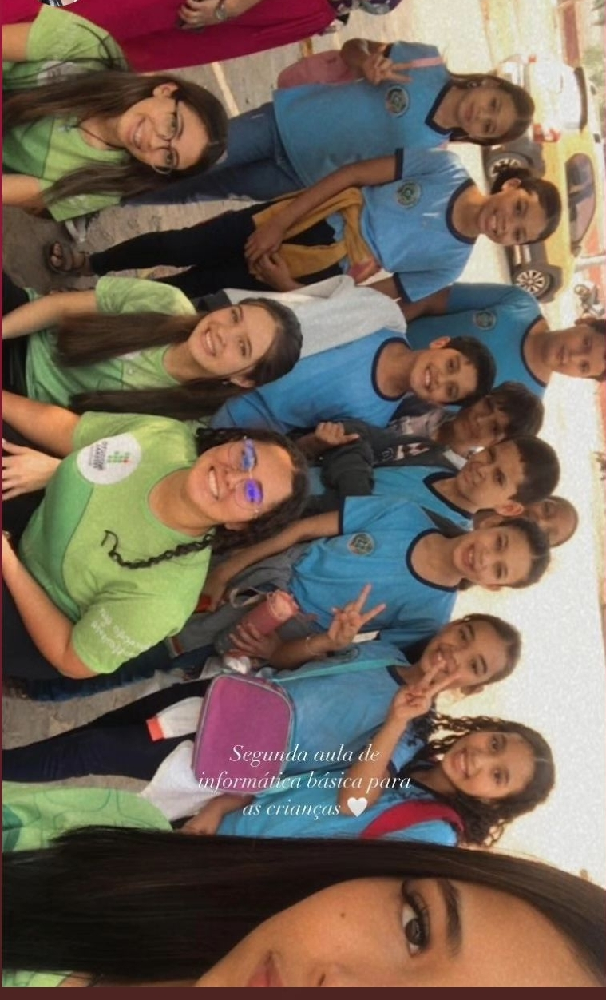

Meus projetos👷🏼♀️
Comecei a fazer um projeto sobre informática básica, com as crianças do 5ª ano da escola Castelo Branco.
Eles são uns amores de crianças, por enquenta estou gostando muito.
Apesar de não ter muita paciência com pessoas, estou apredendo com elas.
Nesse projeto esta, Ana Clara, Brenda, Yasmin e eu

- A informática básica começa antes do surgimento do primeiro protótipo de um computador, na década de 1830. O princípio que levou ao desenvolvimento desse tipo de tecnologia é bem mais antigo. Surgiu com a necessidade de criar um dispositivo que pudesse fazer cálculos rapidamente.
Compreender os componentes e funções básicas de um computador; Aprender como utilizar a Área de Trabalho, navegar, pesquisar, baixar arquivos na Internet; Conhecer os principais programas do Windows e características dos editores de texto e, por fim, Aprender boas práticas para navegação segura na internet.